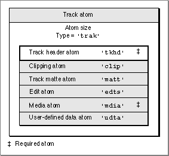

Track Atoms
Track atoms define a single track of a movie. A movie may consist of one or more tracks. Each track is independent of the other tracks in the movie and carries its own temporal and spatial information. Each track atom contains its associated media atom. Figure 4-7 shows the layout of a track atom. The track atom requires the track header atom and the media atom.Figure 4-7 The layout of a track atom

The track atom contains a track header atom (
'tkhd'), a track clipping atom ('clip'), a track matte atom ('matt'), an edit atom ('edts'), a media atom ('mdia'), and a user-defined data atom ('udta'). You define a track atom by specifying these elements:
- Size. The number of bytes in this track atom.
- Type. The type of this track atom (the atom type,
'trak').- Track header. The track header atom associated with this track. See the next section for details.
- Track clipping. The track clipping atom associated with this track. See "Clipping Atoms," which begins on page 4-15, for more on clipping atoms.
- Track matte. The track matte atom associated with this track. See "Track Matte Atoms," which begins on page 4-16, for more on track matte atoms.
- Edits. The edit atom associated with this track. See "Edit Atoms," which begins on page 4-16, for details.
- Media. The media atom associated with this track. See "Media Atoms," which begins on page 4-11, for details.
- User data. The user-defined data atom associated with this track. This field is used for extension with new data types. See "User-Defined Data Atoms," which begins on page 4-14, for details.